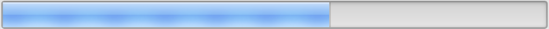
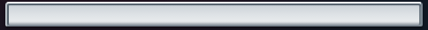
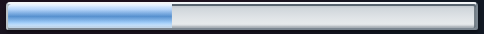
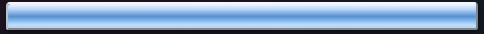
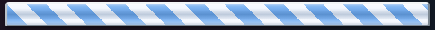
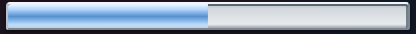
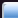
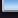

Every control is normalized once to a 28px outer raster height, then displayed at 4× with nearest-neighbor enlargement. The 34px candidate crops retain 2px of background above and 4px of detached cast-shadow falloff below the 28px object. The primary-source crops retain their corresponding exterior rows.






| Rendered metric | Measured | Required | Result |
|---|---|---|---|
| Top lip over recessed seam | 146.27 | ≥28 luma | PASS |
| Seam below channel | 110.87 | ≥18 luma | PASS |
| Empty-channel range / 8-point bins | 24.35 / 4 | ≥18 / ≥4 | PASS |
| Max adjacent channel-row jump | 5.93 | ≤16 luma | PASS |
| Lower seam darkening | 13.07 | 10–38 luma | PASS |
| Perimeter diversity / range | 3 values / 112.13 | ≥3 / ≥24 | PASS |
| Left/right seam contrast | 125.06 / 100.13 | each ≥14 | PASS |
| Left highlight over right return | 58.42 | ≥8 luma | PASS |
| Left / right / max transition width | 4 / 4 / 4px | each ≤4px | PASS |
| Max horizontal drift / 40px | 1.00 | ≤6 luma | PASS |
| Dark / light cast peak | 8.28 / 32.53 | each 8–35 | PASS |


The upper corner rolls through a brighter, broader highlight. The tighter lower corner turns into the darker return edge; detached shadow pixels continue beneath instead of becoming an opaque bottom rule.